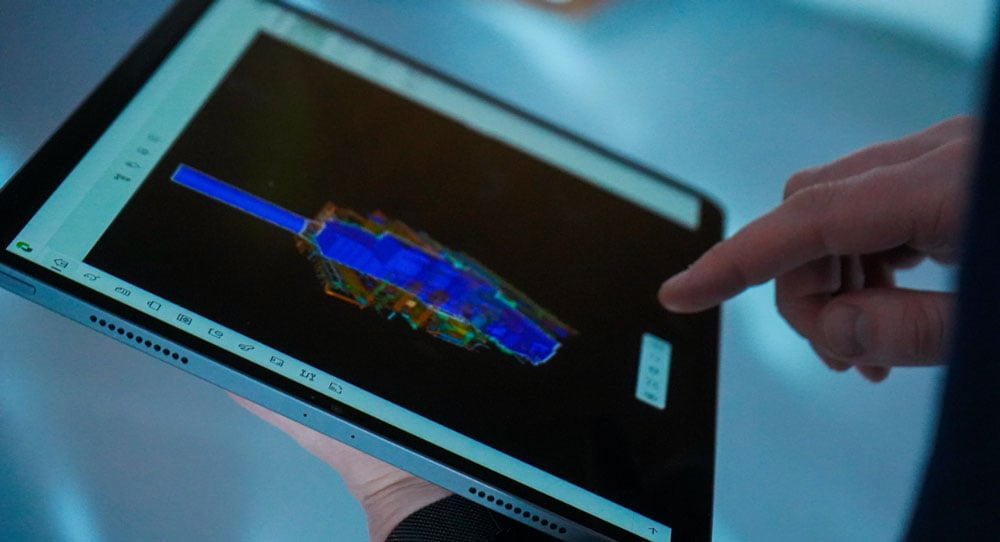

Your login paths include app access, SSO handoff, no-SSO first login, MFA, and guest users. Turn those paths into a CI regression map before the backlog grows.
Prepared for Nicolay Ryste
Aize's IAM gap can protect product velocity
Saw Aize is hiring a Senior Software Engineer for IAM. The role spans C#/.NET, React, Terraform, CI/CD, cloud work, and the identity flow inside Aize.

Our read
Aize is not just filling a security admin seat. The IAM role says a small team owns an app within the app and the full identity flow. That means product work across C#/.NET backend, React portal updates, Terraform, CI/CD, and customer identity systems. Aize's own product page says administrators manage users and permissions across assets, with existing identity providers such as Azure AD or Google Workspace. If this flow slips, asset owners and partners wait longer to reach the single source of truth.
Where we'd start
Your careers post says IAM owns backend, portal, integrations, and infrastructure. Pick one customer-facing access slice and ship it with release checks during hiring.
What we'd do
Six-week bridge squad
A dedicated squad under Aize's PO/PM and IAM tech lead. Weekly demos keep product control with your team.
Senior C#/.NET IAM engineer
React + .NET full-stack engineer
DevOps engineer for Terraform
QA/security tester
C#/.NET
React
Terraform
CI/CD
Cloud
QA automation
Pilot milestones
1
Flow map
Map SSO, MFA, guest, and tenant paths against the IAM backlog, then mark the riskiest customer access states.
2
Backlog slice
Build one C#/.NET backend slice, with React portal updates where user status or permission feedback is unclear.
3
Release checks
Add Terraform and CI/CD checks for identity changes, so weekly releases do not create hidden access regressions.
4
IAM QA
Create QA cases for invites, offboarding, role changes, failed provider handoffs, and guest tenant rules.
Who is Elinext
Elinext is a full-cycle software development company, active since 1997, with about 700 in-house specialists and no freelancers. For Aize, the fit is the dedicated-team model: senior backend, frontend, DevOps, QA, and management roles can work under your lead. We bring ISO 9001 and ISO 27001 practices, useful for identity and access work. Our customer history includes Siemens, Broadcom, Volkswagen, TRUMPF, and TUI. That gives the proposed squad a strong base for secure product delivery without taking ownership away from Aize.
Siemens
Broadcom
Volkswagen
TRUMPF
TUI
Proof
Real-time data insights of machines performance
Industrial web and DevOps work that connected machine data and helped teams improve operations.
Read case studyCI/CD optimization for infrastructure software
Pipeline work for a broad infrastructure product, with faster releases and quality checks kept in place.
Read case study